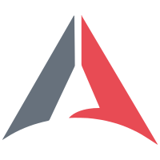

Render your Obsidian vault as a browsable, print-friendly website. Mac-native app, one click to start.
Pick the build that matches your Mac. Requires macOS 11 or later.
Not sure which one? Click the Apple menu → About This Mac. If it says "Chip: Apple M…", pick Apple Silicon. Otherwise pick Intel.
Knowledge Manager.app into your Applications folder.http://localhost:8080.Knowledge Manager.app.Right-click the app → Open (not double-click) on first launch. This bypasses Gatekeeper for unsigned apps.
Check the log at
~/Library/Application Support/Knowledge Manager/server.log.
Delete
~/Library/Application Support/Knowledge Manager/vault.path
and relaunch. You'll be asked to pick a new vault.
Remove ~/Library/Application Support/Knowledge Manager/ and relaunch. All per-user state lives there.